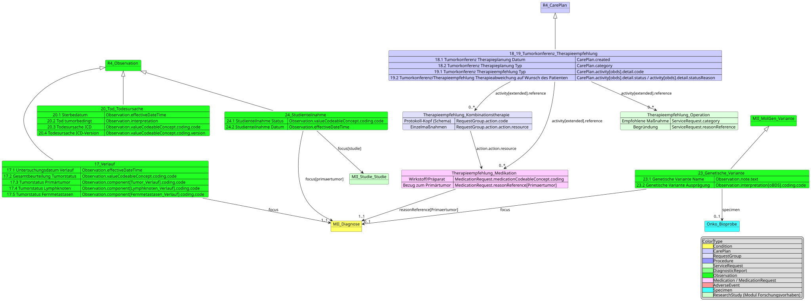
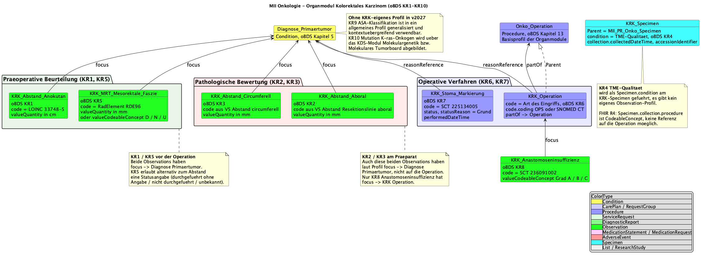

MII IG Kerndatensatz-Modul Onkologie
2027.0.0-ballot.rc1 -
Germany
MII IG Kerndatensatz-Modul Onkologie
2027.0.0-ballot.rc1 -
Germany
MII IG Kerndatensatz-Modul Onkologie - Local Development build (v2027.0.0-ballot.rc1) built by the FHIR (HL7® FHIR® Standard) Build Tools. See the Directory of published versions
Die vollständige, automatisch generierte Liste aller Profile dieses Moduls findet sich auf der Artefakt-Übersicht; die fachliche Dokumentation jedes Profils steht als Einleitung direkt auf der jeweiligen Profilseite. Diese Seite gibt den Überblick: die Standards-Basis, die vereinfachten Strukturdarstellungen je oBDS-Kapitel und die organspezifischen Module.
Jede Box führt direkt zur Profilseite; Farben nach FHIR-Ressourcentyp, Gruppierung entlang des onkologischen Behandlungspfads (oBDS-Kapitel).
Die Arbeiten der Kerndatensatz-Spezifikationen basieren, falls möglich, auf internationalen Standards und Terminologien — hervorzuheben ist die International Patient Summary. Eine Anpassung an die Gegebenheiten des deutschen Gesundheitswesens erfolgt durch die Verwendung der Deutschen FHIR-Basisprofile von HL7 Deutschland; außerdem wird Kompatibilität zu den FHIR-Spezifikationen der Kassenärztlichen Bundesvereinigung (KBV) angestrebt.
Im Folgenden werden die Profile in vereinfachter Version dargestellt. Diese Darstellung legt besonderen Wert auf die Vererbung von anderen Profilen und das Mapping der oBDS-Datenfelder auf die entsprechenden FHIR-Elemente.
Die Diagnose enthält sowohl Informationen zur Primärdiagnose selbst als auch zur Histologie und Lokalisation des Primärtumors.



Vier Profile beschreiben die Lymphknotenuntersuchungen im Rahmen des onkologischen Stagings. Das oBDS sieht vier unterschiedliche Datenpunkte vor:
Das Verhältnis zwischen befallenen und untersuchten Lymphknoten wird teilweise im klinischen Alltag bestimmt, ist im oBDS aber nicht als eigener Datenpunkt vorgesehen.
Die organspezifischen Module erweitern das Basismodul um entitätsspezifische Datenelemente gemäß den Anforderungen der ADT/GEKID-Basisdokumentation. Sie adressieren die besonderen diagnostischen und therapeutischen Aspekte einzelner Tumorentitäten.
Das Mamma-Modul implementiert die organspezifischen Profile für Mammakarzinom-relevante Daten gemäß oBDS-Modul Mammakarzinom: Rezeptorstatus-Bestimmungen (Estrogen/Progesteron mit Färbeintensität und Anteil positiver Zellen), Menopausenstatus, präoperative Markierungsmodalitäten, intraoperatives Imaging und Mamma-spezifische Operationsverfahren. Der Her2Neu-Status ist derzeit im Molecular-Tumorboard- Profil abgebildet; die Tumorgröße wurde in das Histologie-Kapitel verschoben, da sie auf multiple Entitäten anwendbar ist.

Das Prostata-Modul umfasst PSA-Werte als zentralen Tumormarker, Gleason-Scoring (primäre, sekundäre und tertiäre Patterns), Grade Groups (1–5), Biopsie-Ergebnisse (Anzahl Stanzen, Karzinom-Befall) und postoperative Komplikationen nach Clavien-Dindo.

Das KRK-Modul umfasst die präoperative Beurteilung (Abstand zur Anokutanlinie, MRT-basierte Messung der mesorektalen Faszie, ASA-Klassifikation), KRK-spezifische Operationsverfahren und Stoma-Markierung, Resektionsränder (aboral und zirkumferentiell/CRM), die Anastomoseninsuffizienz-Graduierung und spezifische Specimen-Profile für KRK-Resektate.

Die Melanom-Profile umfassen die Breslow-Tiefe (LOINC 39092-1) als wichtigsten prognostischen Faktor, die Ulzeration des Primärtumors (SNOMED CT 385324008), den Sicherheitsabstand der Exzision, die LDH als prognostischen Marker und Melanom-spezifische Exzisionsverfahren.